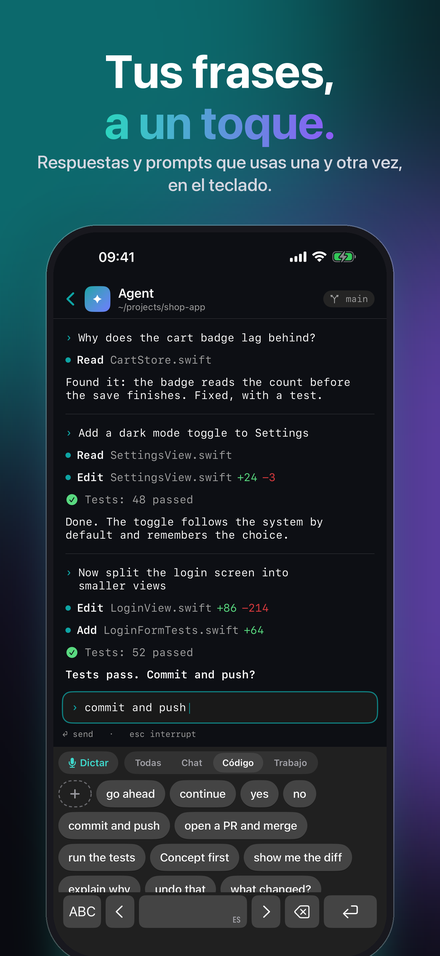
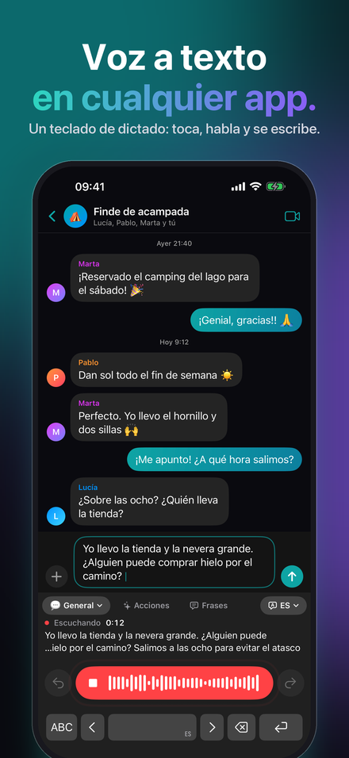
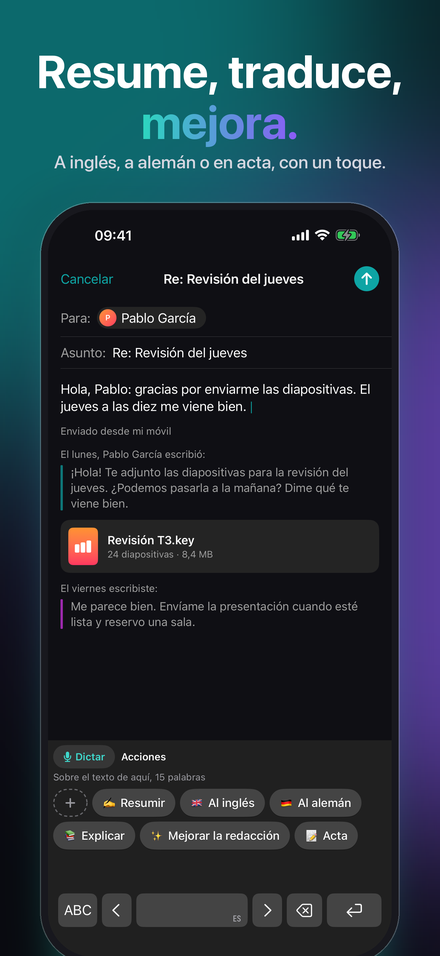
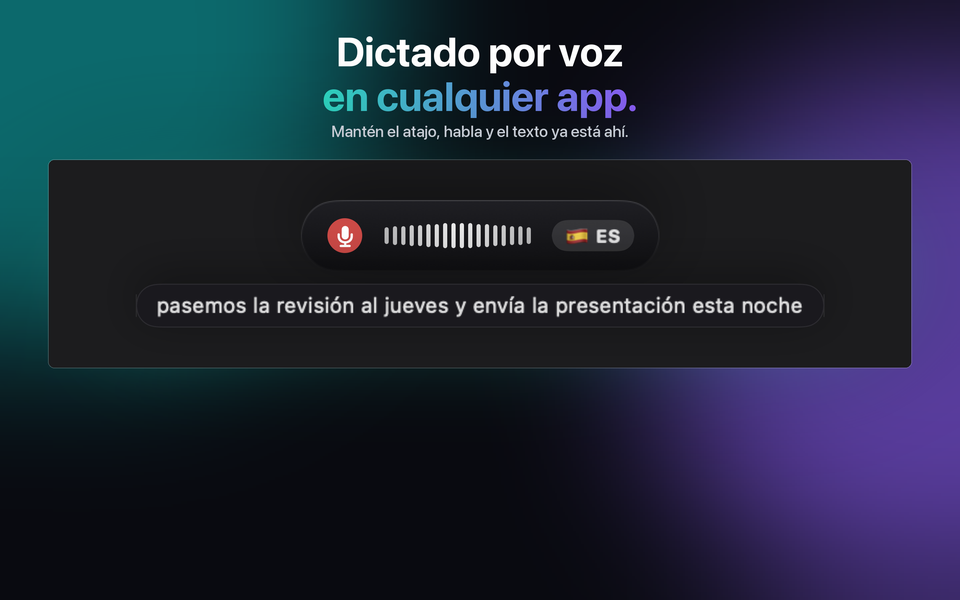
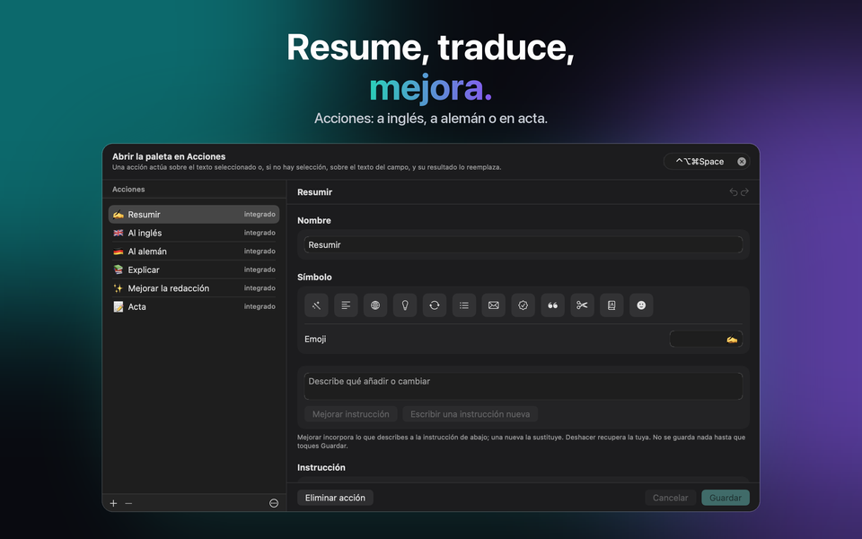
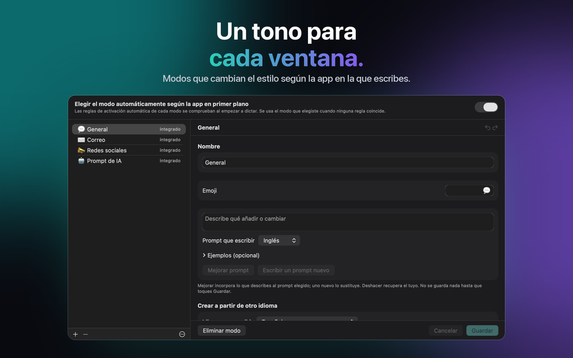

Para Mac, Windows, iPhone y iPad
Voz a texto y transcripción IA
Tú hablas. Él escribe. JustTalk es dictado por voz para tu Mac: transcripción a texto en cualquier app, pulida con IA.



Consigue JustTalk
La misma app en cada plataforma, con los mismos modos, los mismos idiomas y la misma elección entre local y nube. Cada una se compra una vez en su propia tienda: el App Store para Mac, iPhone y iPad, Microsoft Store para Windows. En Mac, iPhone y iPad, iCloud mantiene iguales tus modos, frases, acciones y ajustes; Windows participa a través del archivo de configuración.
macOS
macOS 14 o posterior, Apple silicon o Intel. Dicta en cualquier app con un atajo.
Windows
Windows 10 (1809) o posterior, x64, x86 o ARM64. El instalador es un MSIX firmado.
iPhone & iPad
iOS y iPadOS 26 o posterior. Un teclado desde el que dictar en cualquier app, y una hoja de compartir para las grabaciones que ya tienes.
Qué hace
El software de dictado normalmente te da una transcripción en bruto y te deja la limpieza a ti. JustTalk termina el trabajo: pulsa una tecla, habla, y la frase ya pulida se pega en la app que tengas delante — sin ventana a la que cambiar, sin nada que copiar a mano.
Escrito, no solo transcrito
Un modelo de lenguaje quita las muletillas y corrige la puntuación. Lo que llega al campo es algo que tú mismo habrías escrito.
Local o nube, tú decides
Whisper y un modelo local funcionan por completo en tu propio ordenador, gratis y sin conexión. O conecta Google, OpenAI, Groq, Mistral o Anthropic con tu propia clave y págales directamente.
100 idiomas
Se detectan mientras hablas, incluso a mitad de frase. No hay que tocar ningún ajuste al cambiar.



Qué cuesta
La app es un solo pago. Los modelos son gratis si los ejecutas en local, y de pago por uso si utilizas un proveedor en la nube — te factura él, no nosotros. Diez minutos de dictado al día con Groq quedan muy por debajo de un dólar al mes según sus tarifas de septiembre de 2026; un día intenso de 45 minutos sale por uno a tres dólares. Todo está desbloqueado durante siete días, sin nada reservado y sin necesidad de tarjeta.
Tras la prueba, la versión gratuita sigue funcionando cada día con 2 dictados de hasta 30 caracteres cada uno, 5 frases, 5 acciones y, en iPhone y iPad, 5 correcciones de escritura. JustTalk Pro lo hace todo ilimitado con un único pago; con un servicio de IA en la nube, el uso solo lo limita entonces tu acceso a ese servicio. No es una suscripción y no hay nada que cancelar.
Cómo lo usa la gente
Correo y chat
General se encarga del día a día; los demás modos tienen su propio tono y vocabulario, y el adecuado puede elegirse automáticamente según la app en la que dictas.
Reuniones
Captura las dos partes de una llamada y obtén la transcripción de toda la conversación, no solo de tu mitad.
Frases y Acciones
Lo que escribes una y otra vez está a un toque, en el teclado del iPhone y en la paleta del ordenador. Una Acción reescribe la selección, o todo el campo, con una instrucción que escribes tú, o que escribe el modelo.
Escribir en el iPhone
El teclado de JustTalk también tiene todas las letras, y «Corregir lo que escribo» ordena lo tecleado cuando haces una pausa: erratas, mayúsculas, puntuación, nunca tus palabras.
Grabaciones
Una nota de voz, una clase, una entrevista: ábrela o compártela con JustTalk y obtén la transcripción, en todas las plataformas.
En local o en la nube: decides tú, y te decimos lo que cuesta cada opción
JustTalk es la app alrededor de los modelos, no los modelos en sí. Ejecútalos en local — Whisper más un modelo de lenguaje local a través de llama.cpp, Ollama o LM Studio — y no se sube nada, no se factura nada, no existe ninguna cuenta. Ese camino es de primera clase y pide un Mac o un PC con memoria de sobra; en el iPhone y el iPad el reconocimiento en el dispositivo hace lo propio con el dictado. O conecta un proveedor en la nube con una clave que creas tú: más rápido y más preciso, y te factura directamente por lo que uses. Sin analítica, sin rastreo, sin cuenta con nosotros en ningún caso. La política de privacidad dice exactamente qué envía cada opción. En la app, «Tus datos y la IA» muestra en todo momento adónde van tu voz y tu texto, y la declaración sobre IA explica qué IA hace qué.
Dicta en 100 idiomas, incluidos inglés, alemán, francés, español, italiano, portugués, japonés, coreano, griego, ucraniano y ruso.
JustTalk
Gratis para probar, desbloqueado con una sola compra. Mac, Windows, iPhone y iPad, 100 idiomas, y nada se sube salvo que lo pidas.